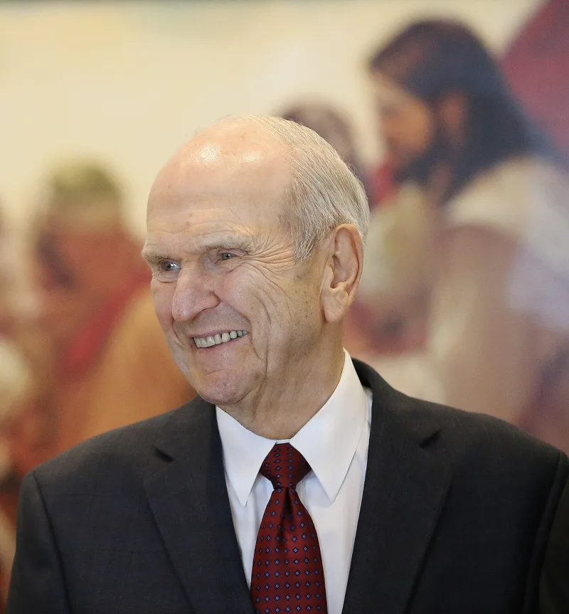
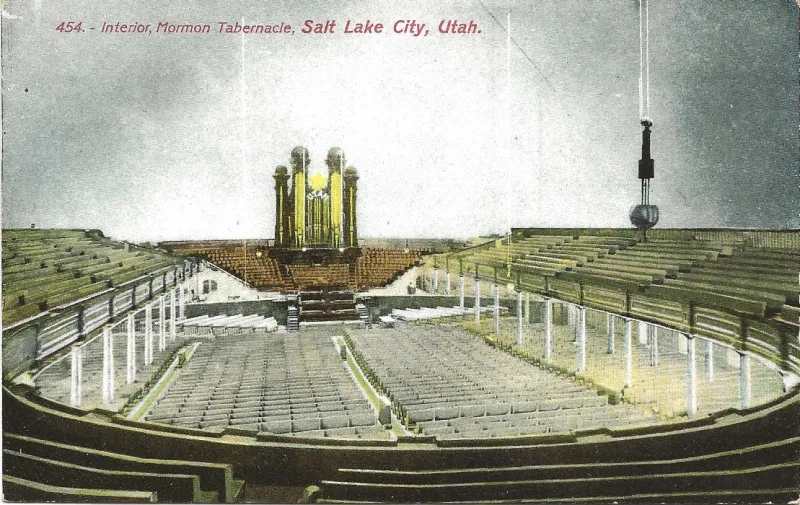

'Mormon' called 'a major victory for Satan' in 2018
AdmittedTheir own church publications admit these facts. You can make this point from LDS sources alone.
The evidence
What was said in 2018
Between August and October, President Russell M. Nelson declared that using Mormon or LDS for the church "is a major victory for Satan" and an offence to Jesus.
He mandated the full name. The Mormon Tabernacle Choir, LDS.org and mormon.org were all renamed.
What the church had just been doing
The I'm a Mormon advertising campaign, from 2010 to 2018, at a cost of millions. The feature film Meet the Mormons, in 2014.
And official pages calling Mormon an inoffensive nickname.
And before that
Gordon B. Hinckley, as prophet, embraced the word in public.
"Mormon means more good." That was General Conference in October 1990 — answering the plea for the full name that then-Elder Nelson had made earlier that same year.
Their answer, at full strength
That the Lord named the church in D&C 115:4, and restoring the full name honours Christ. See also 3 Nephi 27:7-8.
The earlier nickname campaigns were well-meant accommodations to public awareness. And prophets can receive updated direction, line upon line, without their predecessors being condemned.
Nelson said it was "not a name change… it is a correction" commanded by the Lord.
How strong is this argument?
They admit every fact, and this is a soft one doctrinally. Keep it light.
Its use is that it is small, recent, and always coming up. A prophet framed a reversal of his predecessors' public position as timeless divine will, and attached the word Satan to what the church itself did until that year.
What to say
"Why can't we say Mormon anymore? Your church was running 'I'm a Mormon' ads until 2018."



How they answer this — at its strongest
The Lord named the church in D&C 115:4, and prophets get updated direction.
Nelson taught that the Lord named the church in D&C 115:4, and that restoring the full name honours Christ. See also 3 Nephi 27:7-8.
The earlier nickname campaigns were well-intentioned accommodations to public awareness.
And prophets can receive updated direction, line upon line, without their predecessors being condemned. Nelson said the change was 'not a name change… it is a correction' commanded by the Lord.
The verdict
They admit the facts, so keep it light: a small, recent, always-live example.
This is a soft case doctrinally, but it is documented end to end from church sources. And it is constantly live in conversation. Why can't we say Mormon anymore?
Its value is as an accessible, low-stakes specimen of the pattern the bigger cases show. A prophet framed a reversal of his predecessors' publicly taught position as timeless divine will. And he attached the word Satan to what the church itself did until that year.
Use it as a gentle door-opener, not a centrepiece.
Sources
- Salt Lake Tribune, Oct 7 2018: 'Members offend Jesus... President Nelson says'
- Church News: 'President Russell M. Nelson: The Correct Name of the Church'
- wasmormon.org: compilation of prior 'I'm a Mormon' / 'Meet the Mormons' usage
- Fox News coverage of the 2018 policy